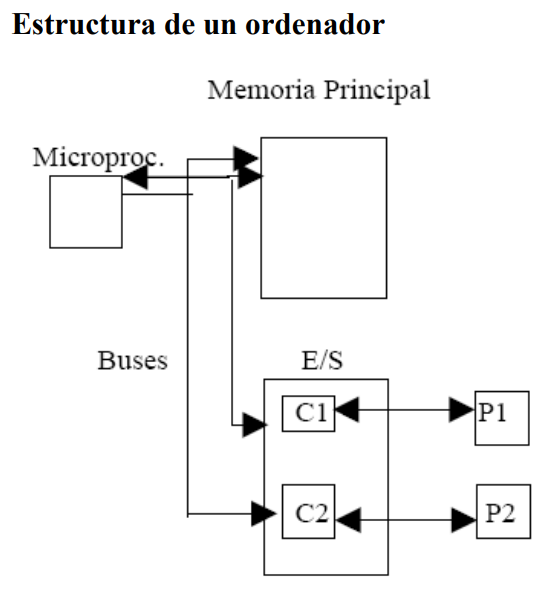

Informática: información + automática. Definición: Conjunto de conocimientos científicos y técnicas que hacen posible el tratamiento automático de la información por medio de ordenadores.
Ordenador: Máquina compuesta por elementos físicos, en su mayoría de origen electrónico, capaz de realizar una gran variedad de trabajos a gran velocidad y con gran precisión. Permite el tratamiento automático de la información, facilitándonos su organización, proceso, transmisión y almacenamiento.
Un ordenador se compone de Hardware y Software.
Hardware o parte física (monitor, teclado, ...): el conjunto de sus componentes forma el sistema informático.
Software o parte lógica (programas para que funcione el Hardware): instrucciones, programas y aplicaciones informáticas. Hay dos tipos:
El componente humano está constituido por las personas que participan en la dirección, diseño, desarrollo, implantación y explotación de un sistema informático.
Podemos definir información como datos, todo aquello que es capaz de ser manejado por un sistema, como entrada, programa o resultados. Todo aquello que se puede leer o escribir.
Los sistemas de información los podemos clasificar en sistemas de flujo de información y sistemas de tratamiento de información. Independientemente del sistema que se esté procesando la información, debemos saber que esta información estará representada por símbolos. Los símbolos por sí solos no constituyen información, si no que la representan.
Una computadora debido a su origen electrónico, maneja señales digitales, de manera que todos sus códigos internos se basan en el sistema binario.
En Informática la unidad mínima de información es el BIT. Es un valor binario que puede valer 0 o 1. Como unidad de información mínima, representa la información correspondiente a la ocurrencia de un suceso entre dos posibilidades distintas. Puesto que la información se representa por medio de caracteres e internamente se codifica en un alfabeto binario, podemos definir el byte como el número de bits necesarios para almacenar un carácter. Este número dependerá del código utilizado por el ordenador, pero en general suele ser 8 por lo que se dice que un byte son 8 bits. Como el byte es una unidad muy pequeña se suelen utilizar múltiplos:
Los sistemas informáticos se pueden clasificar de dos maneras: